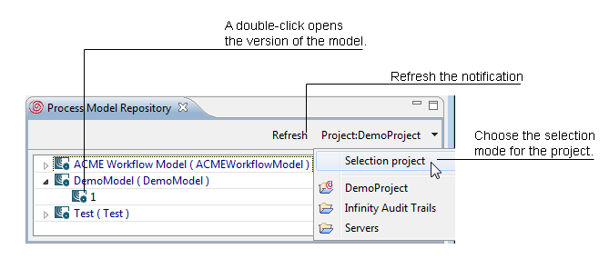
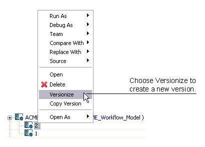

The Process Model Repository view lists all process models in a selected project. You can choose between a sticky and an open selection. By choosing Sticky Project you freeze the currently open project to keep its model listed, while by choosing Selection Project the listing changes to the project where the actual folder is.

Figure: The Process Model Repository
In the listing of the models you find their version trees. To open the model double-click the version number you want to work with. To create a new version of your model right-click the version number of your model and choose Versionize in the pop-up menu. The open version changes its status to a released version, a new version is created as its successor and opened in the Process Workbench. You can also copy a version by selecting Copy Version. In the upcoming dialog, type in the ID for the copied version. To delete a version, choose Delete in the pop-up menu.

Figure: Versionizing a Model in the Process Model
Repository